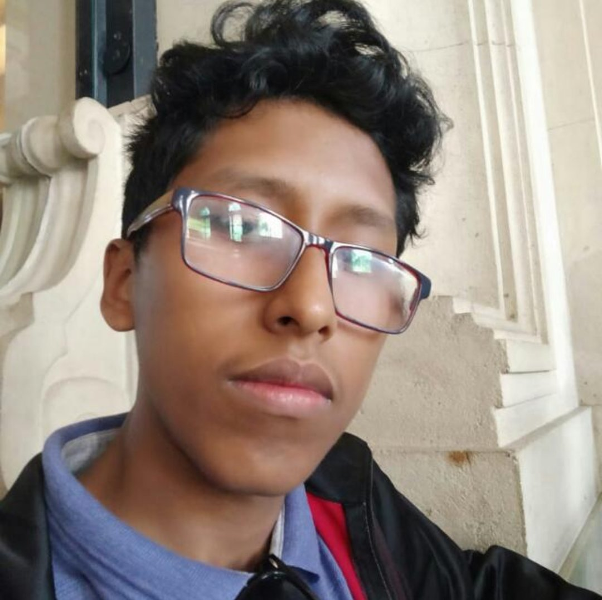

Carol
Caroline Ferreira, 20 anos estou cursando Ds para melhorar meu currículo, minha matéria favorita é programação web.

Leticia
Leticia Santos, 26 anos, sou formada em jornalismo e técnica em multimídia. Sou responsável pela comunicação visual e editorial do site. Escolhi Desenvolvimento de Sistemas para migrar de carreira para a área de tecnologia.

Jorge
Jorge Albert, 18 anos, sou recém formado no ensino médio e me identifico com exatas e a parte lógica da programação. Meus hobbies são xadrez e jogos como Call of Duty.

Vitor
Vitor Moreira, 25 anos, Desenvolvedor SQL, escolhi cursar DS para me atualizar com novas técnicas de desenvolvimento e praticar linguagens diferentes.